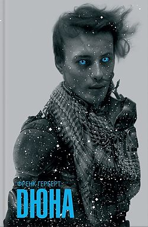
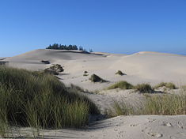

«Дю́на» (англ. Dune) — науково-фантастичний роман американського письменника Френка Герберта 1965 року, перший в низці з шести романів, що складають фантастичну сагу.
Дія роману відбувається у вигаданому всесвіті Галактичної імперії, якій підвладна безліч екзопланет.
Ключову
роль в її житті відіграє пустельна планета Арракіс, також звана Дюною,
де видобувається унікальна
речовина —
меланж (або прянощі)
. В романі описується життя молодого Пола Атріда, сина герцога одного з аристократичних
домів, якого прагне знищити імператор і ворожі герцоги.
Родина Атрідів отримує у володіння Арракіс, що
виявляється пасткою. Однак Полу належить не тільки вижити, а й назавжди змінити імперію та природу Дюни.

Зміст
Історія написання

Орегонські дюни поблизу міста
Флоренс,
штат
Орегон
, які
надихнули Герберта на створення
саги Дюна
Після того, як у 1957 році був опублікований його роман «Дракон у морі», Герберт поїхав до міста Флоренс, штат Орегон, в північній частині Орегонських дюн. Тут Міністерство сільського господарства Сполучених Штатів намагалося використати посухостійкі трави, які можуть рости на бідних і піщаних грунтах, для стабілізації піщаних дюн. У листі до свого літературного агента Луртона Блессінґейма Герберт стверджував, що рухливі дюни можуть «поглинути цілі міста, озера, річки, дороги».[1] Стаття Герберта про дюни «Вони зупинили рухливі піски» так і не була завершена (і опублікована лише десятиліттями пізніше в «Дорозі до дюни» ), але це дослідження викликало інтерес Герберта до екології та пустель[2].
Герберт черпав натхнення в індіанських наставників, таких як «індіанець Генрі» (так Герберт називав чоловіка своєму синові; ймовірно, Генрі Мартін з племені Хох) і Говард Гансен. І Мартін, і Хансен виросли в резервації Квілет поблизу рідного міста Герберта. За словами історика Даніеля Іммервара, Гансен регулярно ділився своїми творами з Гербертом. «Білі люди їдять землю», — сказав Хансен Герберту в 1958 році після того, як поділився матеріалом про вплив вирубки на резервацію Квілет. «Вони перетворять всю цю планету на пустку, як у Північній Африці». «Світ може стати «великою дюною», — погодився Герберт. [3]
Герберт черпав натхнення також із роману Леслі Бланча «Райські шаблі» (1960), який розповідає про конфлікт середини XIX століття на Кавказі між суворими ісламізованими тюркськими племенами та експансивною Російською імперією. [4] Мова, яку використовували обидві сторони конфлікту, стала терміном у світі Герберта — чакобса, кавказька мисливська мова, стала бойовою мовою людей, поширених по всій галактиці; kanly, слово для кровної помсти на Кавказі в 19 столітті, представляє ворожнечу між дворянськими домами Дюни; січ (sietch) і табір (tabir) — обидва слова для позначення табору, запозичені від українських козаків (понтійсько-каспійського степу)[4].
Зміст
Світ Дюни
Через 20 тисяч років людство розпорошилось у Всесвіті, заселивши незліченну кількість планет. Після повстання мислездатних машин відбулася війна з ними, Батлеріанський Джигад. Люди здобули перемогу і було накладено заборону на конструювання комп'ютерів та штучного інтелекту, але наука й технологія дуже розвинулися у сфері використання ресурсів людського організму. Місце комп'ютерів зайняли люди із високорозвинутим інтелектом — ментати.
Галактику Чумацький Шлях займає імперія, на планетах якої правлять аристократичні доми, що підкорюються єдиному правителю Падишаху-Імператору Шаддаму IV. Економіку імперії тримає в руках корпорація ДАПТ (Добропорядний Альянс Прогресивних Торговців), акції якої визначають прибутки кожного із домів. Ключ до влади і багатства — планета Арракіс, єдине джерело прянощів (англ. spice, також зустрічається назва меланж (англ. melange)) — речовини, що дозволяє продовжувати життя і розвиває приховані сили. Тільки прянощі роблять можливими міжзоряні подорожі, які координує Гільдія навігаторів. За допомогою прянощів спеціально навчені навігатори отримують можливість надійного прокладання курсу для космічних кораблів, використовуючи технологію згорнутого простору.
Прянощі життєво важливі також для могутнього матріархального ордену Бене Ґессерит, пріоритетом якого є збереження та розвиток людської раси. Представниць ордену Бене Ґессерит часто величають «відьмами», оскільки у них завдяки спеціальним тренуванням (прана-бінду) надзвичайно розвинуті психічні та фізичні здібності. Послушниці ордену стають преподобними матерями після проходження ритуалу агонії від прянощів, під час якого вони випивають смертельну дозу наркотику й зобов'язані знешкодити його у своєму організмі власними силами. Ті, хто зміг пройти випробовування, отримують доступ до пам'яті своїх предків по жіночій лінії. Преподобні матері не здатні бачити генетичну пам'ять предків чоловічої статі. З огляду на це Бене Ґессерит кілька тисяч років проводять таємну програму селекції з метою породити чоловічий еквівалент преподобних матерів, який вони називають Квізац Хедерах. Ця людина була б не тільки спроможною отримати доступ до чоловічої частини генетичної пам'яті, а й подолати своїми аналітичними здібностями обмеження простору й часу, змігши знати, що відбувається на відстані чи відбудеться в майбутньому. За її допомогою Бене Ґессерит отримали б контроль над долею людства.
Планета Арракіс — єдина, де добувають прянощі. Це ворожа для майже будь-якого органічного життя пустеля, в якій водяться гігантські піщані хробаки й загадковим чином зникає вода. Людська раса планети представлена нечисленними войовничими племенами фрименів. Важкі кліматичні умови виробили у фрименів складну систему ритуалів, у якій ключову роль відіграє життєво цінна рідина — вода, яку вони видобувають навіть із мертвих. Зусиллями Бене Ґессерит фрименам була нав'язана віра в месію, який прийде із зовнішнього світу й перетворить Арракіс на гостинний світ.
Сюжет
За наказом імператора Шаддама IV, правителя всього людства, дім Атрідів мусить покинути вологу планету Каладан і переселитися на пустельний Арракіс, що належав підступному дому Харконненів. Герцог Лето підозрює, що імператор замислив знищити його дім, але змушений підкоритися. П'ятнадцятирічний Пол Атрід, син герцога Лето та його наложниці Джессіки, мусить пройти випробування преподобної матері ордену Бене Ґессерит. За планом ордена, донька герцога Лето мала поріднитися з сином барона Владіміра Харконнена, а їхній син — завершити програму тисячолітнього відбору й стати Квізац Хедерахом. Проте Джессіка народила своєму коханцю не доньку, а сина, якого він дуже прагнув — Пола Атріда. Ще юнаком Пол проявляє ознаки того, що він і є потенційним Квізац Хедерахом, народженим на покоління раніше запланованого. Він проходить випробування, витримавши неймовірний біль, чим засвідчує свою здатність керувати тілом і почуттями.
Атріди облаштовуються на Арракісі, де Лето демонструє турботу про простих людей, припиняючи марнотратство води й рятує добувачів прянощів від піщаного хробака. Тим часом здійснюється невдалий замах на Пола, підозри падають на лікаря Юе, але його свідомість змінена таким чином, щоб не шкодити Атрідам. Однак Харконнени обійшли захист його розуму, взявши в полон його дружину. Проте Юе, готуючи зраду, замислює вбити й барона Владіміра. Він паралізує Лето і вставляє йому зуб з отрутою, яка вб'є і герцога, і барона. Після цього він впускає до цитаделі Атрідів імператорські війська — сардаукарів, які вчиняють різанину. За наказом Владіміра Джессіку й Пола вивозять у пустелю на поживу червам. План Юе ж провалюється: Харконнени вбивають його дружину і самого лікаря, а Лето отруює замість Владіміра його ментата й гине сам. Барон ставить на чолі Арракіса свого жорстокого старшого небожа Раббана, щоб потім замінити його молодшим і розсудливим Фейдом-Раутою. Так він сподівається виставити Рауту спасителем, у прихід якого вірять жителі планети, непокірні фримени, і повністю заволодіти населенням Арракіса.
Джессіка з Полом знаходять сховок зі спорядженням, залишений зброєносцем Дунканом Айдаго. Обоє ховаються серед скель, де зустрічаються з племенем фрименів. Вони зауважують, що фримени вірять у прихід месії, що прийде з іншої планети, навіяний Бене Ґессерит. Пол, демонструючи видатні фізичні та розумові здібності, наштовхує багатьох у племені на думку, що він і є месією. Він виборює в поєдинку членство у племені, беручи ім'я Муад'Діб, та знайомиться з дівчиною Чані. Вбираючи місцеві звичаї, Пол з Джессікою водночас навчають нових союзників методів бою, розроблених сестринством Бене Ґессерит. Вони дізнаються, що фрименів насправді дуже багато і вони багато поколінь засаджують пустелі рослинами, щоб колись зробити Арракіс зеленою планетою.
Преподобна матір фрименів невдовзі помре, тому доручає Джессіці замінити її. Джессіка випиває Воду Життя, що передає їй пам'ять преподобної матері. Але вона приховує свою вагітність, тому здібності Бене Ґессерит також передаються її доньці Алії. Пол, як і всі фримени, вживає прянощі, які підсилюють його розумові здібності. Він все частіше бачить видіння майбутнього — всесвітній джигад, де мільярди фанатиків ідуть на смерть за Муад'Діба. Він прагне уникнути цього, але впроваджені Бене Ґессерит уявлення про спасителя повсякчас підтверджують обраність Пола. Разом з тим Пол прагне помститися Харконненам і позбавити фрименів їхнього гніту. Йому вдається осідлати велетенського піщаного хробака, чим довести свою відвагу і вправність. Муад'Діб переконує фрименів відкрито вийти проти Харконненів, що тільки підіймає його авторитет.
Минають роки, Владімір Харконнен довідується про Муад'Діба, але не здогадується хто це. Бойова сила фрименів доти зросла настільки, що вони можуть відвоювати Арракіс навіть у сардаукарів. Загони блокують видобуток прянощів, що ставить під загрозу всю діяльність ДАПТу. Володіючи обмеженим яснобаченням і чудово пристосовані до умов пустелі, фримени відбивають усі напади присланих імператорських військ. Барон, дізнавшись як сардаукарів тренують на планеті-в'язниці, замислює перетворити на таку ж планету Арракіс, натренувати армію і скинути імператора. Розкриваються і плани імператора, він знищив дім Атрідів, боячись зростання його військової міці.
Пол, шукаючи спосіб уникнути баченого у видіннях майбутнього, вирішує пройти смертельно небезпечне випробування Водою Життя. Він вбиває молодого черва, щоб добути речовину. Після трьох тижнів перебування на межі життя й смерті, він повертається у світ, здатним бачити минуле, сучасне й майбутнє, ставши Квізац Хедерахом. Він відчуває на підступах до Арракіса велетенську армаду, зібрану імператором і бароном Харконненом з метою відновити контроль над планетою і добуванням прянощів. Пол усвідомлює їхню величезну силу, але також і власну владу знищити прянощі, наситивши їхні родовища водою.
Під час атаки імперських сил на поселення фрименів гине син Пола, а Алію полоняють сардаукари. Її привозять у столицю, де вона постає перед імператором і верховною преподобною матір'ю. Їх вражає здатність дівчинки мислити, як доросла, і впевненість в тому, що брат зуміє її визволити. Пол зі своєю армією фрименів, скориставшись піщаною бурею, атакує місто. Алія вбиває барона Харконнена, Фейд-Раута викликає Пола на двобій, але гине через власні ж хитрощі. Здолавши опір захисників міста, Пол погрожує імператору знищити прянощі, що зруйнує всю імперію. Під тиском імператор відрікається від влади на користь Пола, пропонуючи йому в дружини свою доньку, принцесу Ірулан. Муад'Діб змирюється з невідворотністю джигаду, зрозумівши, що це спричинить нові переселення людей галактикою і розвиток культур на безлічі планет. Він бере Ірулан за дружину, але обіцяє Чані, що вона, хоч і в статусі наложниці, лишиться його коханою жінкою.
Відзнаки та нагороди
Роман «Дюна» першим із науково-фантастичних творів отримав премію «Неб'юла», запроваджену в 1965.
Написаний в 1965 роман став культовим серед любителів наукової фантастики. Його часто називають найкращим науково-фантастичним романом усіх часів і народів[5][6].
У 1985 році найавторитетнішим шотландським критиком-фантастикознавцем Дейвідом Прінґлом[en] роман включено до переліку 100 найкращих англомовних науково-фантастичних романів за період з 1949 по 1984 рік[7
Видання «Wired» у 2020 році назвало «Дюну» однією з найвпливовіших науково-фантастичних книг[8].
Сиквели
Френк Герберт написав ще п'ять книг, дія яких відбувається у всесвіті «Дюни»: «Месія Дюни», «Діти Дюни», «Бог-Імператор Дюни», «Єретики Дюни» та «Капітула Дюни». Низку приквелів та сиквелів до Дюни створив син Френка Герберта, Браян Герберт в співавторстві з Кевіном Дж. Андерсоном.
Адаптації
Фільми та серіали
- «Дюна» (виробництво 1971—1979) — скасований фільм Алехандро Ходоровського за мотивами роману.
- «Дюна» (1984) — екранізація роману Девіда Лінча.
- «Дюна» (2000) — мінісеріал (3 серії) телеканалу Sci-Fi за романом. Має продовження «Діти Дюни» (2003) за однойменним продовженням книги «Дюна».
- «Дюна» (2021) — екранізація Дені Вільнева.
- «Дюна: Сестринство» (?) — майбутній спін-оф-приквел, мінісеріал до фільму від стримінгового сервісу HBO Max.
- «Дюна: Частина друга» (2023) — запланований фільм; прем'єра запланована на 3 листопада 2023 року.
Відеоігри
- Dune (1992) — стратегія з елементами квесту, більшою мірою заснована на фільмі Девіда Лінча.
- Dune II (1992) — стратегія в реальному часі (RTS) за мотивами роману, засновниця сучасних RTS.
- Dune 2000 (1998) — римейк Dune II з удосконаленою графікою і оповіддю.
- Emperor: Battle for Dune[en] (2001) — RTS за мотивами оригінального роману і продовжень.
- Frank Herbert's Dune (відеогра)[en] (2001) — квест за мотивами роману, більшою мірою заснований на серіалі.
Настільні ігри
- Dune (1979) — гра на спеціальній дошці з фігурками, присвячена боротьбі різних фракцій всесвіту за Арракіс.
- Dune (1997) — колекційна карткова гра, присвячена боротьбі різних фракцій всесвіту за Арракіс.
- Dune: Chronicles of the Imperium (2000) — настільна рольова гра за мотивами роману і його продовжень.
Вплив
Згідно з матеріалом «The Guardian» 2015 року, роман є відображенням свого часу, а саме вбирає та фантастично обробляє тогочасні популярні теми потенціалу тіла людини, змінених станів свідомості, змішання релігій та боротьби проти імперіалізму. Саме «Дюна» зробила можливою появу «Зоряних воєн», які перейняли тему злої імперії, пустельної планети, обраного юнака, котрому призначено змінити долю галактики[9]. В свою чергу «Дюна» може розглядатися спадкоємицею ранішої літературної традиції, а саме творів Едґара Барроуза про пустельну планету Барсум (Марс), на якій герой Джон Картер здобув надзвичайні сили[10].
«ScreenRant» стверджували в 2020 році, що книга вплинула сюжетом чи образністю на такі культові фільми, як «2001: Космічна одіссея» (1968) та «Контакт» (1997) — поміщенням психоделічних видінь в наукову фантастику, «Зоряні війни: Нова надія» (1977) — образом пустельної планети, обраного героя, змішання науки та магії, гіпнотичним Голосом, «Чужий» (1979) і «Прометей» (2012) — за посередництва картин Ганса Ґіґера, розроблених для першої екранізації книги, «Навсікая з долини вітрів» (1984) — темами енвайронтменталізму та колонізації, «Той, хто біжить по лезу» (1982) — за посередництва малюнків Мебіуса для першої екранізації, «Шалений Макс» (1985) — де головний герой має паралелі з Полом, «Тремтіння землі» (1990) — образом велетенських підземних червів, «Зоряна брама» (1994) — темою боротьби на пустельній планеті проти галактичної влади[11].
Сайт «Warp Signal» у 2011 вказував, що франшиза Warhammer 40,000 перейняла з «Дюни» образ теократичної галактичної держави, в якій аристократи борються за владу; стародавньої війни, що завершилася забороною штучних інтелектів; магію в формі психічних здібностей, а також поєднання високих технологій з фанатицизмом, холодною зброєю та забобонністю[12]. «Cultured Vultures» відзначали в 2020, що «Дюна» суттєво вплинула на Warhammer 40,000 темами відмови людства від мислячих машин, використання спеціальних людей-навігаторів для космічних подорожей, таємних жіночих організацій[13].